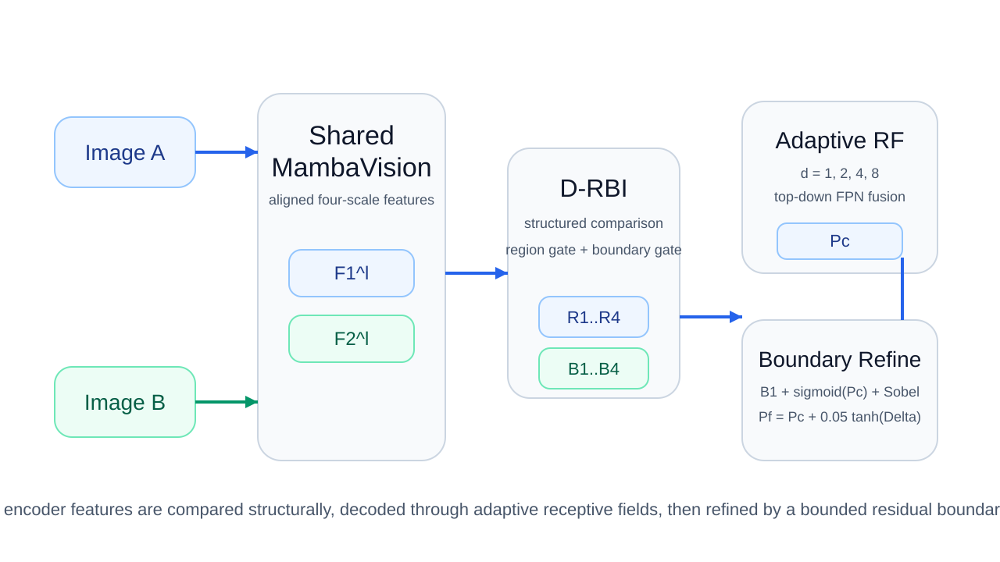
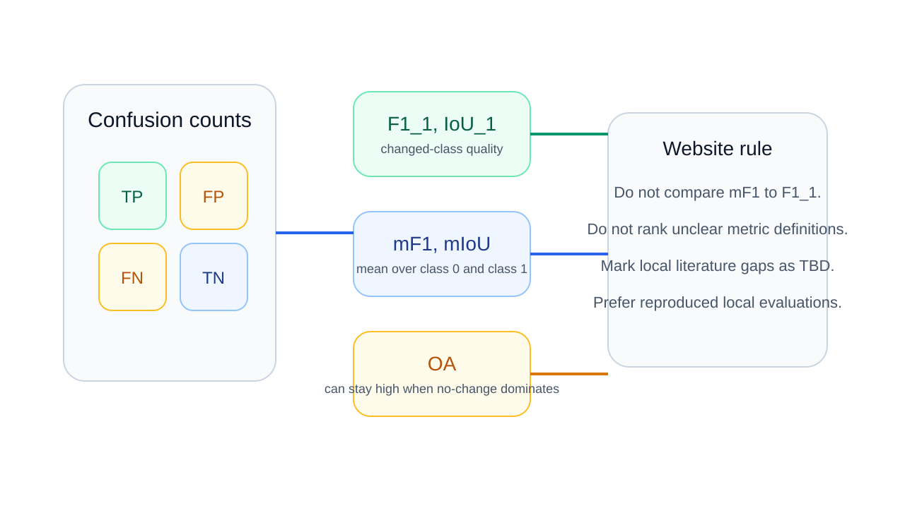
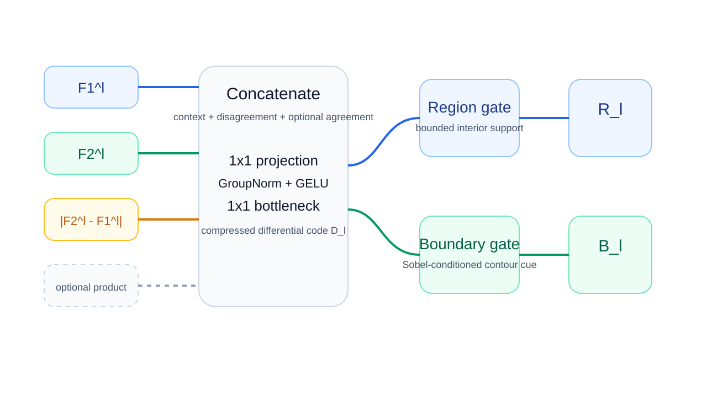
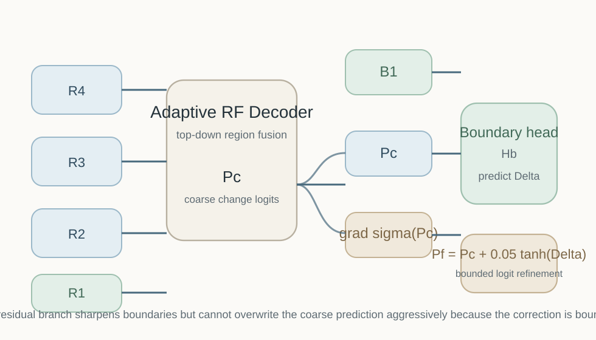

Remote Sensing Change Detection
MambaRefine-CD
Differential Region–Boundary Interaction with Adaptive Receptive Field Refinement for Remote Sensing Change Detection
MambaRefine-CD is a boundary-aware bi-temporal change detection model that combines MambaVision features, structured differential interaction, adaptive receptive-field decoding, and restrained residual boundary refinement.

01
Motivation
Observed image difference is not equivalent to semantic change. The model must separate actual structural change from nuisance variation before classification becomes reliable.
Observation decomposition
\[
\Delta I = \Delta I_{\text{semantic}} + \Delta I_{\text{illumination}} + \Delta I_{\text{seasonal}} + \Delta I_{\text{registration}} + \epsilon
\]
\(\Delta I_{\text{semantic}}\) captures real land-cover change, while the remaining terms represent nuisance variations that can trigger false alarms.
Core insight
Change detection is not a subtraction problem. It is a structured comparison problem.
02
Mathematical Problem
The task is binary change prediction under severe class imbalance.
Inputs
\[
I_1, I_2 \in \mathbb{R}^{3 \times H \times W}
\]
Target
\[
Y \in \{0,1\}^{H \times W}
\]
Predictor
\[
f_{\theta}(I_1, I_2) \rightarrow \hat{Y}
\]
\[
\Pr(Y=1) \ll \Pr(Y=0)
\]
This is why OA alone can be misleading: a model can score highly by over-predicting no-change.
03
Why Naive Difference Fails
Absolute differencing is easy to compute but weak as a complete representation.
\[
D_l^{\text{naive}} = |F_2^l - F_1^l|
\]
\[
\mathbb{E}[D_l] =
\Pr(Y=0)\mathbb{E}[D_l \mid Y=0] +
\Pr(Y=1)\mathbb{E}[D_l \mid Y=1]
\]
Because \(\Pr(Y=0)\) dominates, raw difference statistics are biased toward background behavior.

04
MambaVision Encoder
A shared encoder preserves feature-space alignment across timestamps.
\[
F_1^l = E_l(I_1), \qquad F_2^l = E_l(I_2), \qquad l \in \{1,2,3,4\}
\]
\[
h_t = A_t h_{t-1} + B_t x_t, \qquad y_t = C_t h_t
\]
MambaVision provides strong semantic modeling with efficient long-range state updates, but boundary preservation still requires explicit architectural support.
05
D-RBI Module
D-RBI enriches temporal comparison before routing evidence to region and boundary streams.
\[
Z_l =
\left[
F_1^l,\,
F_2^l,\,
|F_2^l-F_1^l|,\,
F_1^l \odot F_2^l
\right]
\]
\[
D_l = \phi_l(Z_l)
\]
The product term is optional in the implementation and may be disabled for stability.

06
Region / Boundary Gates
Region evidence is broad and coherent; boundary evidence is sparse and high-frequency.
\[
G_l^r =
g_{\min}^r +
(g_{\max}^r-g_{\min}^r)\sigma(\psi_r(D_l)),
\qquad
R_l = G_l^r \odot D_l
\]
\[
G_l^b =
g_{\min}^b +
(g_{\max}^b-g_{\min}^b)\sigma(\psi_b(\nabla D_l)),
\qquad
B_l = G_l^b \odot D_l
\]
\[
\nabla D_l =
\sqrt{(S_x * D_l)^2 + (S_y * D_l)^2 + \epsilon}
\]
07
Adaptive RF Decoder
The region stream enters the main decoder, which mixes multiple dilation scales via soft weighting.
\[
A_l^{(d)} = \text{Conv}_{3\times3}^{d}(\tilde{R}_l),
\quad d \in \{1,2,4,8\}
\]
\[
\bar{R}_l = \sum_{d} w_l^{(d)} A_l^{(d)}, \qquad
U_l = \bar{R}_l + \text{Up}(U_{l+1})
\]
\[
P_c = H_c(U_1)
\]

08
Boundary Residual Refinement
The refinement head is intentionally bounded so it sharpens contours without overwriting the coarse prediction.
\[
E_c = \nabla \sigma(P_c)
\]
\[
\Delta = H_b(B_1, P_c, E_c)
\]
\[
P_f = P_c + 0.05 \tanh(\Delta), \qquad \hat{Y} = \sigma(P_f)
\]
09
Datasets
The website distinguishes reproduced local results from literature-reported values and missing entries.
LEVIR-CD
High-resolution building change benchmark and main binary CD reference dataset.
WHU-CD
Urban building change dataset with stronger sensitivity to precise boundary delineation.
DSIFN-CD
More heterogeneous scene distribution used to assess broader generalization.
SECOND
Semantic change benchmark. The semantic path predicts class labels at both timestamps plus a binary change head, so true SeK is reported only when those semantic outputs exist.
10
Metrics
The website keeps metric definitions explicit so binary and literature-reported values are not mixed improperly.
\[
P_1 = \frac{TP_1}{TP_1+FP_1},
\quad
R_1 = \frac{TP_1}{TP_1+FN_1},
\quad
F1_1 = \frac{2P_1R_1}{P_1+R_1}
\]
\[
IoU_1 = \frac{TP_1}{TP_1+FP_1+FN_1},
\quad
mF1 = \frac{F1_0 + F1_1}{2},
\quad
mIoU = \frac{IoU_0 + IoU_1}{2}
\]
\[
OA = \frac{TP+TN}{TP+TN+FP+FN}
\]
\[
\hat{y}_{sc}(x) = \mathbb{1}\left[\arg\max_c p_{t1}(c \mid x) \neq \arg\max_c p_{t2}(c \mid x)\right]
\]
\[
SeK = \kappa\left(\hat{y}_{t2}, y_{t2} \mid y_{change}=1\right)
\]
Important: this site does not compare \(mF1\) against \(F1_1\), and it does not present binary fallback scores as true semantic SeK.
11
Verified MambaRefine-CD Results
These tables are populated from local output folders and local fallback logs only.
12
Mamba-CD Protocol Comparison
For comparison with Mamba-CD-style binary change detection papers, we report Precision, Recall, F1, IoU, and OA. In our implementation, these correspond to change-class precision, recall, F1_1, IoU_1, and overall accuracy. We do not use mF1 as F1.
Metric mapping
| Paper Metric | MambaRefine-CD Metric Key |
|---|---|
| Pre | precision_1 |
| Rec | recall_1 |
| F1 | F1_1 |
| IoU | IoU_1 |
| OA | OA |
Paper F1 here always means change-class F1_1, not mF1.
Interpretation
13
SOTA Comparison
The comparison tables prefer reproduced evaluations under our loaders and our metrics. Missing checkpoints and adapter failures are shown explicitly.
Ranking should be based on reproduced rows under the same pipeline. Literature values are not mixed into these direct comparisons.
14
Qualitative Results
The gallery is collected automatically from local output folders and grouped by inferred dataset.
15
Ablation Study
Ablation study evaluates the contribution of each component by removing or modifying it.
Component importance
Run scripts/extract_ablation_results.py after ablation evaluation to populate this section.
Protocol
Rows are read from outputs/ablation/ablation_summary.csv after extraction and copied into website/assets/tables/ablation_summary.csv. Validation and test outputs remain separate.
Paper Table
Ablation table pending.
16
Efficiency
Efficiency values come from local model scripts and are reported separately from dataset metrics.
| Item | Value |
|---|
Reporting status
Loading local efficiency profile.
17
Usage
All configuration is controlled through configs/global_config.yaml.
python scripts/extract_all_results_for_website.py
python scripts/extract_mambacd_protocol_results.py
python scripts/model_efficiency.py
python scripts/run_ablation.py
python scripts/extract_ablation_results.py
python scripts/plot_ablation.py
python scripts/validate_ablation.py
python scripts/run_sota_reproduction_pipeline.py
python scripts/collect_website_qualitative.py
python scripts/validate_mambacd_protocol_tables.py
python scripts/validate_website.py
cd website && python -m http.server 8000SECOND semantic config
\[
f_\theta(I_1, I_2) \rightarrow \{P(change), P(class_{t1}), P(class_{t2})\}
\]
Enable model.output_mode = semantic_change, model.enable_semantic_heads = true, dataset.mode = semantic, and loss.type = second_semantic_cd to obtain true SECOND OA, Fscd, mIoU, and SeK.
18
Notes / Citation Placeholder
This section is reserved for final paper citation, acknowledgements, and manual notes for any external values that still require human verification.
Unverified literature numbers are displayed as such and should not be treated as final rankings without metric-definition checks.